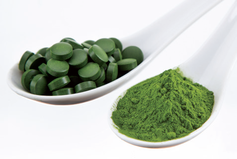

1. Primary metabolites:
Metabolites produced for the maintenance of life process of microbes are known as primary metabolites Eg. Ethanol, citric, acid, lactic acid, acetic acid.
2. Secondary metabolites:
Secondary metabolites are those which are not required for the vital life process of microbes, but have value added nature, this includes antibiotics example Amphotericin B OPEN BRACKET Streptomyces nodosus CLOSE BRACKET, Penicillin OPEN BRACKET Penicillium chryosogenum CLOSE BRACKET Streptomycin OPEN BRACKET
S. grises CLOSE BRACKET , Tetracycline OPEN BRACKET S. aureofacins CLOSE BRACKET,alkaloids, toxic pigments, vitamins etc.
3. Microbial enzymes
When microbes are cultured, they secrete some enzymes into the growth media. These enzymes are industrially used in detergents, food processing, brewing and pharmaceuticals. Example protease, amylase, isomerase, and lipase.
4. Bioconversion, biotransformation or modification of the substrate
The fermenting microbes have the capacity to produce valuable products, example conversion of ethanol to acetic acid OPEN BRACKET vinegar CLOSE BRACKET, isopropanol to acetone, sorbitol to sorbose OPEN BRACKET this is used in the manufacture of vitamin C CLOSE BRACKET, sterols to steroids.
Single cell proteins are dried cells of microorganism that are used as protein supplement in human foods or animal feeds. Single Cell Protein OPEN BRACKET SCP CLOSE BRACKET offers an unconventional but plausible solution to protein deficiency faced by the entire humanity. Although single cell protein has high nutritive value due to their higher protein, vitamin, essential amino acids and lipid content, there are doubts on whether it could replace conventional protein sources due to its high nucleic acid content and
slower in digestibility. Microorganisms used for the production of Single Cell Protein are as follows:
Bacteria - Methylophilus methylotrophus, Cellulomonas, Alcaligenes
Fungi - Agaricus campestris, Saccharomyces cerevisiae OPEN BRACKET yeast CLOSE BRACKET, Candida utilis
Algae - Spirulina, Chlorella, Chlamydomonas

The single cell protein forms an important source of food because of their protein content, carbohydrates, fats, vitamins and minerals. It is used by Astronauts and Antarctica expedition scientists. Spirulina can be grown easily on materials like waste water from potato processing plants OPEN BRACKET containing starch CLOSE BRACKET, straw, molasses, animal manure and even sewage, to produce large quantities and can serve as food rich in protein, minerals, fats, carbohydrate and vitamins. Such utilization also reduces environmental pollution. 250 g of Methylophilus methylotrophus, with a high rate of biomass production and growth, can be expected to produce 25 tonnes of protein.
Applications of Single-Cell Protein
It is used as protein supplement
It is used in cosmetics products for healthy hair and skin
It is used as the excellent source of protein for feeding cattle, birds, fishes etc.
It is used in food industry as aroma carriers, vitamin carrier, emulsifying agents to improve the nutritive value of baked products, in soups, in ready-to-serve-meals, in diet recipes
It is used in industries like paper processing, leather processing as foam stabilizers.